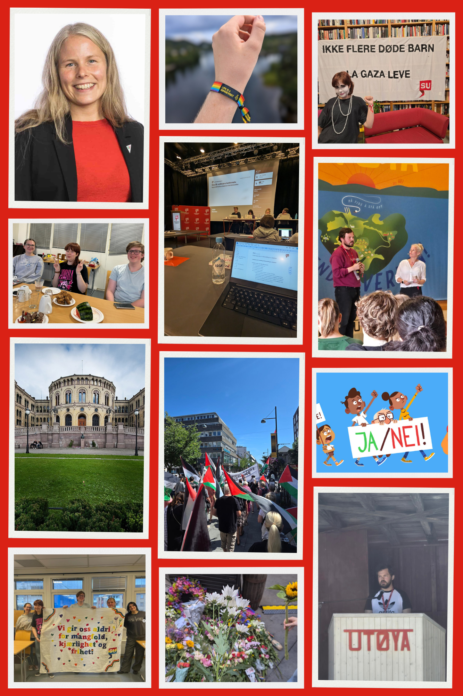

Jeg har mange små interesser, men jeg vil si at jeg har to hovedinteresser. Naturligvis er IT en av dem, siden jeg går IT og medieproduksjon på skolen. I tillegg har jeg stor interesse for politikk. Det gir meg stor glede å vite at det er mulig å påvirke og endre verden gjennom politisk engasjement.
Jeg er medlem av et ungdomsparti og er lokallagsleder i Vennesla. Politikk gir meg muligheten til å jobbe for endringer som kan forbedre samfunnet.
